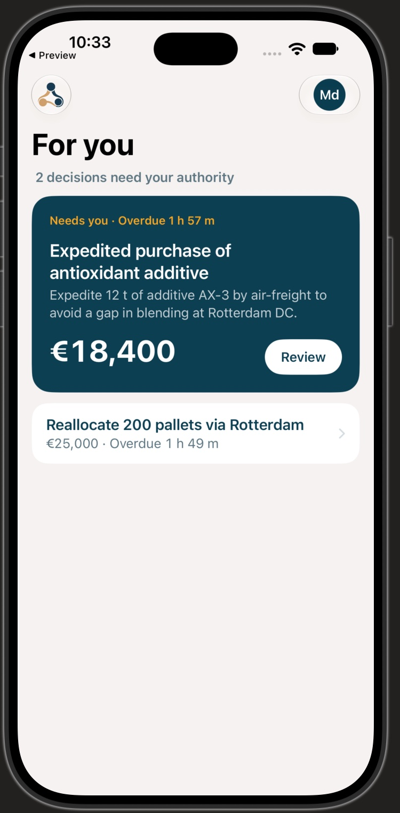
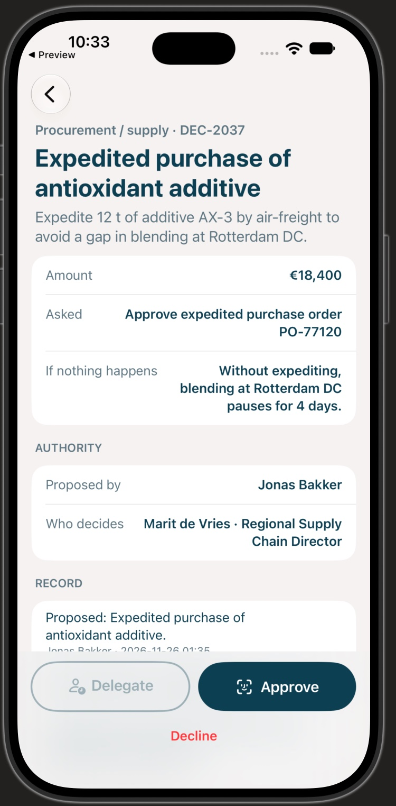
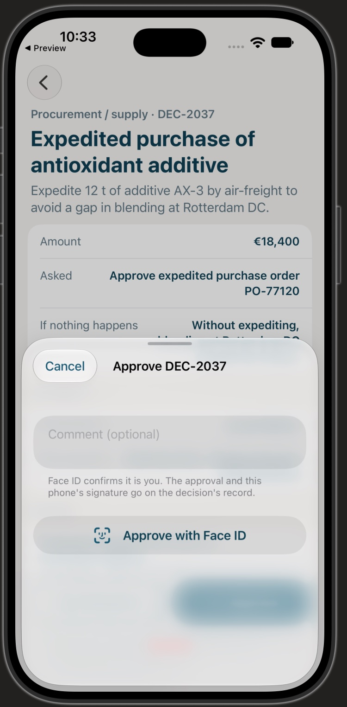

01 · For youSee the decisions waiting for your authority.
Executive app
See the decisions that need your attention. Review the evidence, understand the route and approve, decline or delegate within your organisation’s policy.
Arrange a guided walkthroughA decision in your hands
Review the queue, open a decision with its authority and evidence, then confirm a sensitive action with Face ID.

01 · For youSee the decisions waiting for your authority.

02 · Escalation to the CSCOThe CSCO only receives requests that exceed the mandates they have set for their teams. Aidecis follows each organisation’s own policies.

03 · Confirm with Face IDConfirm a sensitive approval through the iPhone’s native confirmation sheet.
Illustrative iPhone screens. Decision limits and delegation routes are set by each organisation.
Delegation with accountability
Delegation follows your organisation’s configured authority policy. By default, the delegated decision carries authority to act within its approved limits. If it is not resolved by the due time, it returns to the accountable owner.
Name the delegate, instruction and due time.
The delegated authority follows the configured policy.
Unresolved decisions return to the accountable owner.
Organisations can configure a recommendation-only route where the owner retains final approval.
See the decision flow
We can walk through the evidence, the route and the record with an illustrative supply-chain case.